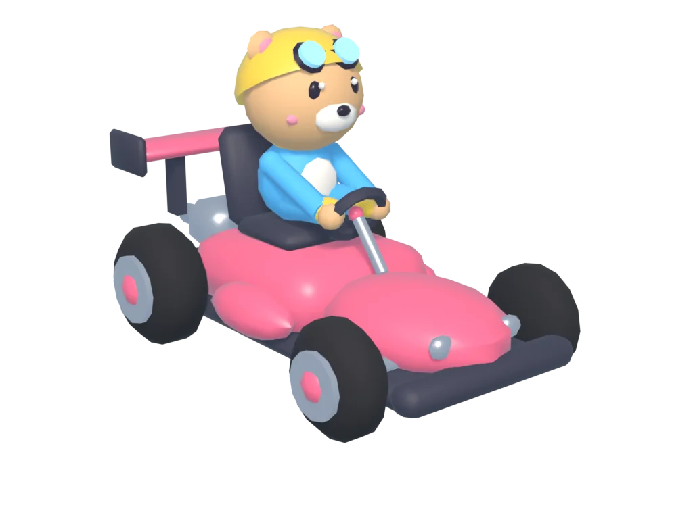

아이들은 즐겁게 퀴즈를 풀고, 선생님은 깊이 있게 분석해요 · 사용법

아이들은 게임처럼 즐겁게 퀴즈를 풀고, 선생님은 정답률·오개념·응답 시간·다시 만난 문제·게임 속 행동·모둠 협력을 분석실에서 살펴 다음 수업을 설계해요. 골든벨부터 전통놀이 모둠 협력 게임까지 단원 정리에 맞게 골라 쓸 수 있어요.
크롬북·태블릿·컴퓨터 · 학생 설치와 회원 가입 없음. 카트는 최대 40명이며, 실제 기기·네트워크에서 사전 확인하세요.
선생님 화면 열기